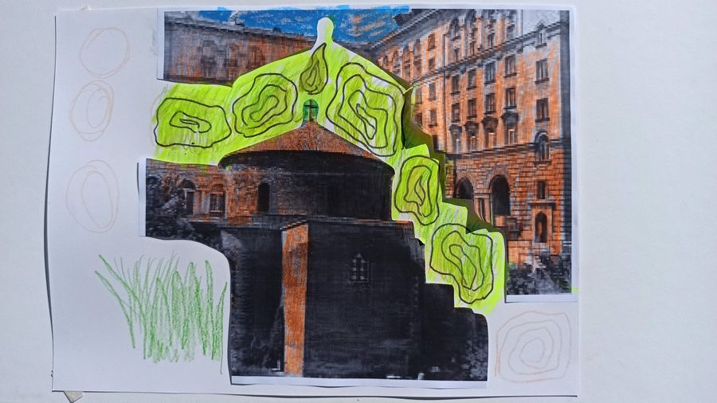

Моята София — един различен поглед

Първият пътеводител, създаден от хора с увреждания — те разказват за местата в София с рисунка, песен и пластика.
„Моята София — един различен поглед“ е първият пътеводител, създаден от хора с увреждания. Те разказват за природните и културните забележителности, използвайки различни изразни средства — рисунка, песен, пластика.
С помощта на доброволци хора с увреждания посещават различни културни обекти в столицата. Впечатленията и емоциите от преживяното се събират в пътеводител, сътворен от самите тях.
Проектът спечели финансиране от Столична община, Дирекция „Култура“.
Проектът се реализира с подкрепата на Столична община, Дирекция „Култура“ (финансиране).
Търсим доброволци с визуални изкуства — пишете на info@elaiti.com.